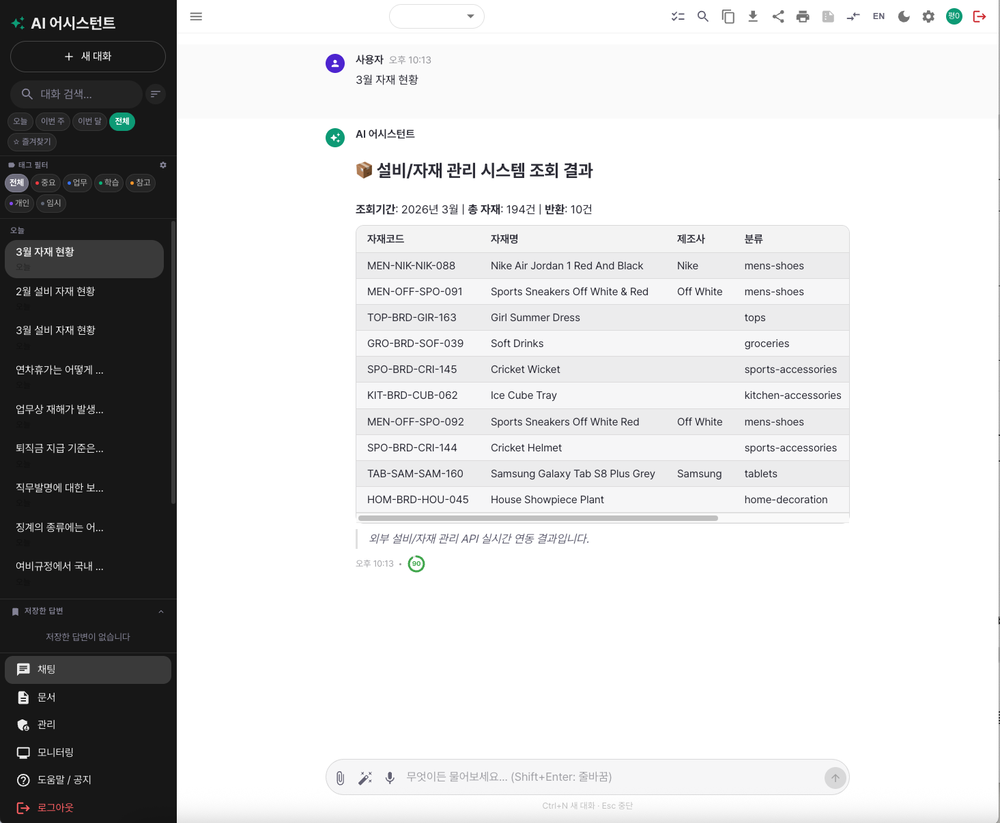
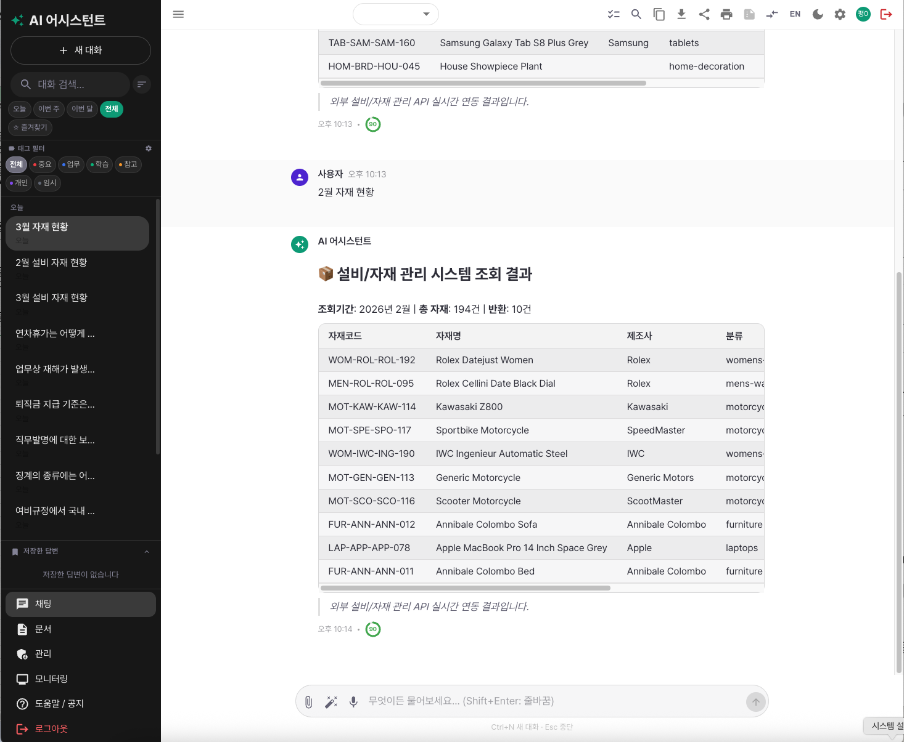
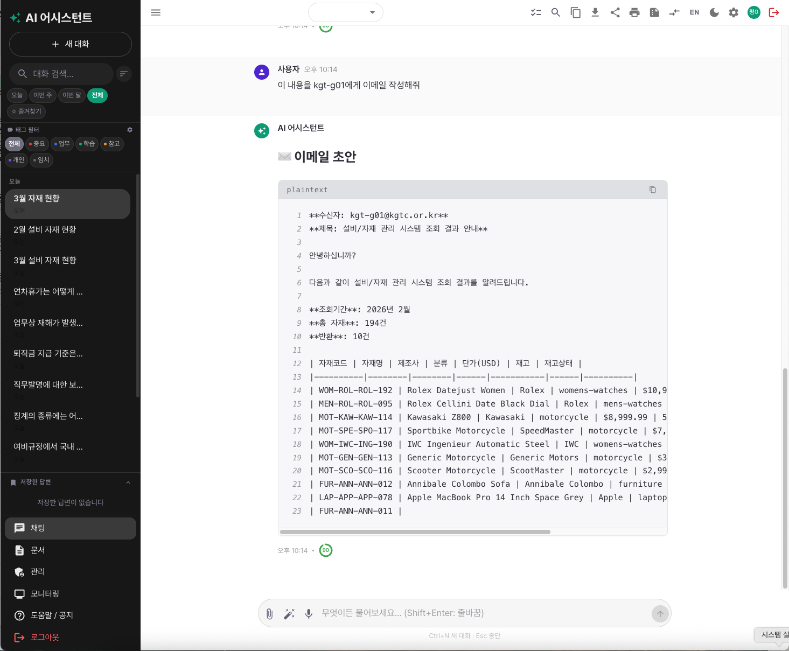
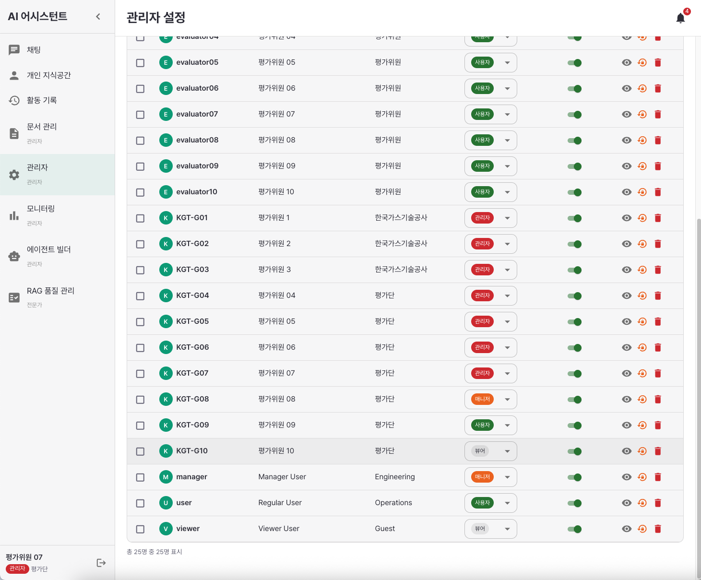
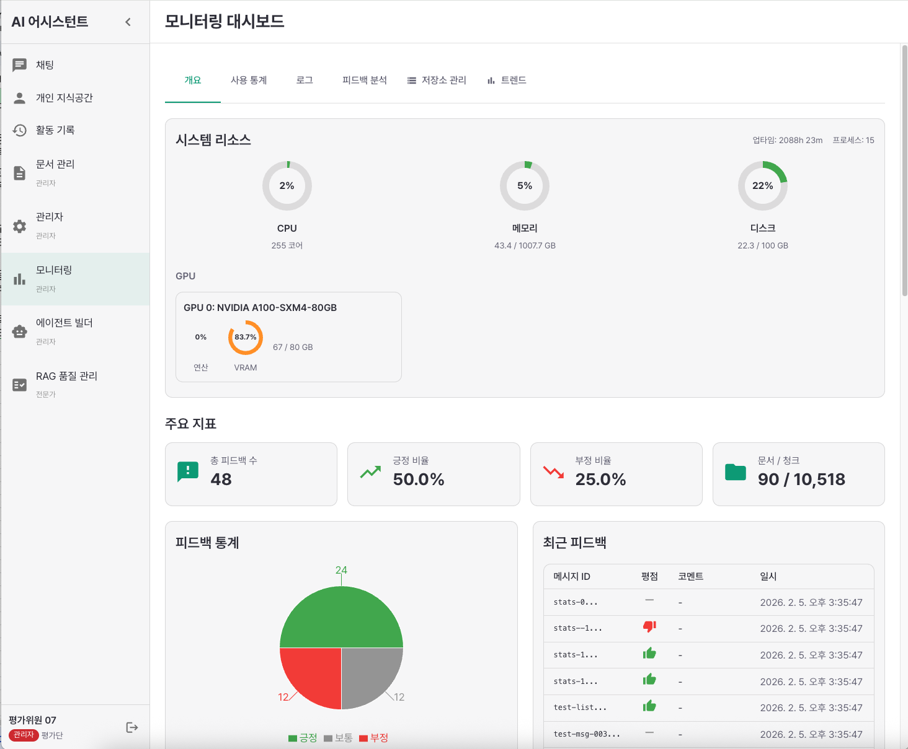
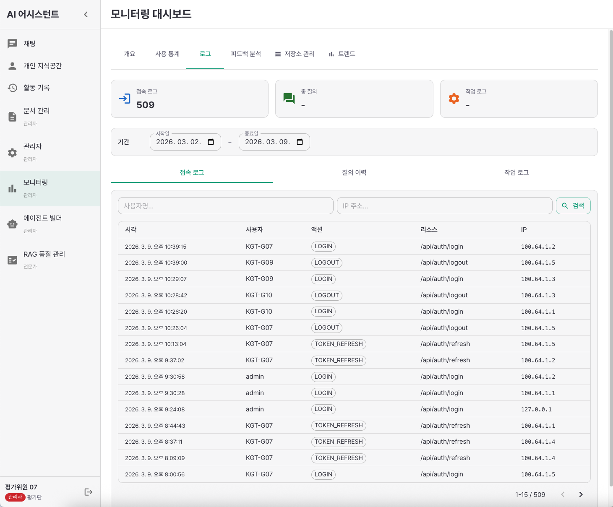
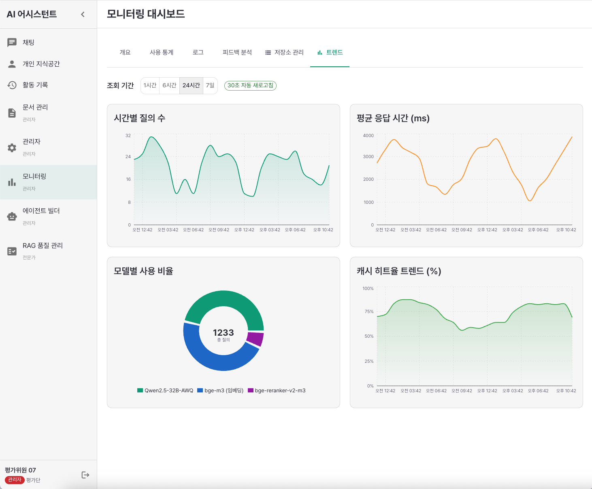
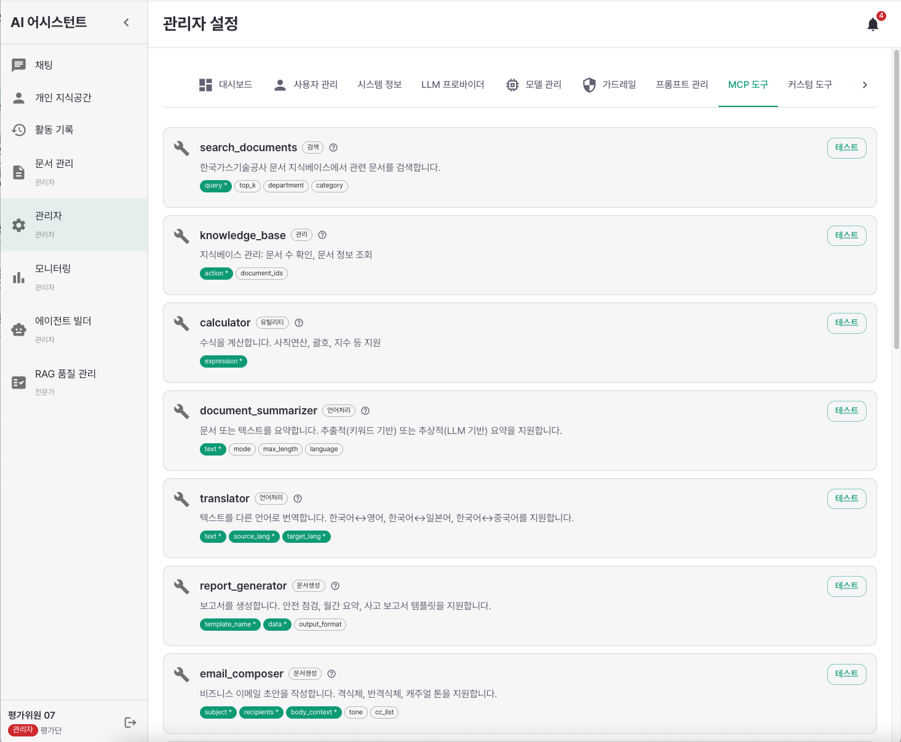
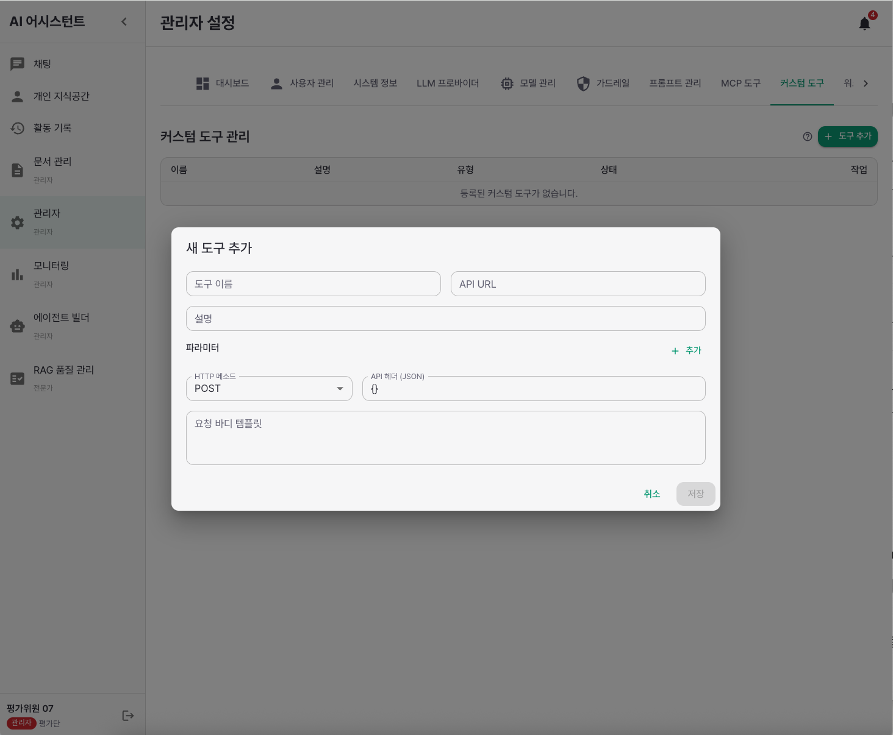

RAG 시스템 핵심 사양
| 항목 | 사양 |
|---|---|
| LLM 모델 | Qwen2.5-32B-Instruct-AWQ (vLLM, A100 GPU) |
| 임베딩 모델 | BAAI/bge-m3 (1024 차원) |
| 벡터DB | Milvus 2.6 Lite |
| 검색 방식 | 하이브리드 (Vector + BM25) |
| 인제스트 문서 | RAG평가용 문서 92개 파일, 10,518 청크 |
| 벤치마크 | 300문항 92.3% (자동 평가 기준) |
SSE 스트리밍
ChatGPT와 동일한 실시간 토큰 출력
신뢰도 배지
높음/중간/낮음 3단계 검색 신뢰도
출처 표시
참고 문서 + 유사도 점수 카드
범위 외 차단
보유 문서 밖 질문은 안전하게 거절
채팅 화면

라이트 모드

다크 모드
시연 질문 8개
사전 제공되는 RAG 평가용 문서(92개 내부규정)를 기반으로 한 시연 질문입니다.
- 연차휴가는 어떻게 부여되나요?
- 안전보건 교육은 누가 얼마나 받아야 하나요?
- 갑질 예방지침에서 정의하는 '갑질'이란?
- 여비규정에서 국내 출장 시 일비 지급 기준은?
- 징계의 종류에는 어떤 것들이 있나요?
- 직무발명에 대한 보상 규정이 있나요?
- 퇴직금 지급 기준은 어떻게 되나요?
- 업무상 재해가 발생했을 때 보상 절차는?
질문별 답변 스크린샷
Q1. 연차휴가는 어떻게 부여되나요?

Q2. 안전보건 교육은 누가 얼마나 받아야 하나요?

Q3. 갑질 예방지침에서 정의하는 '갑질'이란?

Q4. 여비규정에서 국내 출장 시 일비 지급 기준은?

Q5. 징계의 종류에는 어떤 것들이 있나요?

Q6. 직무발명에 대한 보상 규정이 있나요?

Q7. 퇴직금 지급 기준은 어떻게 되나요?

Q8. 업무상 재해가 발생했을 때 보상 절차는?

OCR 핵심 사양
| 항목 | 사양 |
|---|---|
| OCR 엔진 | Upstage Document Parse (Cloud API) |
| 지원 문서 | 스캔 PDF, 이미지 (JPG/PNG), 도면 |
| 특화 기능 | 한국어 표/도형 인식, 레이아웃 분석 |
| 처리 방식 | 채팅에서 파일 첨부 시 자동 OCR + AI 분석 |
평가 방식: 현장에서 제공하는 문서/이미지를 즉석에서 인식 및 데이터화 성능을 검증합니다. 평가 자료는 사전 비공개입니다.
파일 첨부 OCR
채팅창에서 파일 첨부 시 자동 OCR 처리 후 AI가 내용 분석
표/도형 인식
한국어 표, 양식, 도면의 구조화된 데이터 추출
다중 파일 지원
여러 파일을 동시에 첨부하여 비교 분석 가능
레이아웃 분석
Upstage Document Parse 기반 정교한 레이아웃 보존
OCR 시연 예시
입력 문서

OCR 처리 대상 원본 문서
OCR 인식 결과

인식 결과 (1)

인식 결과 (2)

인식 결과 (3)
OCR 사용 방법
- 채팅 화면에서 하단의 파일 첨부 아이콘을 클릭합니다.
- 스캔된 PDF 또는 이미지 파일을 선택합니다.
- Upstage Document Parse를 통해 자동 OCR 처리됩니다.
- 추출된 텍스트가 AI 컨텍스트에 반영되어 질문에 답변합니다.
- 예시 질문: "이 문서의 주요 내용을 요약해주세요"
에이전트 빌더 핵심 기능
| 기능 | 설명 |
|---|---|
| 비주얼 워크플로우 | React Flow 기반 노드 드래그 & 연결 |
| 노드 유형 7종 | 시작, LLM 생성, 문서 검색, 도구 실행, 조건 분기, 출력, 변환 |
| 프리셋 5개 | 간단 RAG, 보고서 생성, 다단계 분석, 도구 체이닝, 조건 분기 |
| MCP 도구 16개 | 지식검색, 설비DB, ERP, EHSQ, 그룹웨어, 이메일 등 |
| 인라인 실행 | 워크플로우를 즉시 실행하고 결과 확인 |
| 저장/내보내기 | JSON 형식으로 워크플로우 저장 및 공유 |
에이전트 빌더 화면
노드 팔레트 및 캔버스

노드 팔레트(좌), 캔버스(중앙), 속성 편집(우)
프리셋 워크플로우

5개 프리셋 워크플로우 선택
워크플로우 DAG 구성

노드 연결로 구성된 워크플로우 DAG
워크플로우 실행 및 결과
실행 입력

워크플로우 실행 - 입력 쿼리 전달
실행 결과

워크플로우 실행 결과
워크플로우 빌드 과정 (영상)
노드 드래그 → 연결 → 실행까지 전체 과정
외부 시스템 연동 (실시간 API)
실제 외부 REST API 호출 — Mock 데이터가 아닌 외부 설비/자재 관리 시스템 API에 실시간 연동하여 데이터를 조회합니다.
월별 파라미터(1월~12월)로 기간별 데이터를 필터링할 수 있습니다.
시연 시나리오
| 단계 | 사용자 입력 | AI 동작 |
|---|---|---|
| 1 | "3월 설비 자재 현황" | 외부 API 호출 → 3월 자재 10건 테이블 반환 |
| 2 | "2월 설비 자재 현황" | 외부 API 호출 → 2월 자재 10건 (다른 데이터셋) |
| 3 | "이 결과를 OOO에게 이메일 작성해줘" | 도구 체이닝: 자재 조회 결과 → 이메일 자동 생성 |
자재 조회 결과 (3월)

외부 API 실시간 연동 — 3월 설비/자재 관리 시스템 조회 결과
자재 조회 결과 (2월) — 월별 다른 데이터

동일 API, 다른 기간 → 다른 자재 목록 반환
도구 체이닝: 조회 결과 → 이메일 작성

자재 조회 결과를 이메일로 자동 작성 (도구 체이닝)
실시간 HTTP 호출
외부 REST API에 실제 HTTP 요청 → JSON 응답 수신
월별 파라미터
1월~12월 기간별 다른 데이터셋 조회
도구 체이닝
조회 결과를 다른 도구(이메일 등)에 자동 전달
17개 MCP 도구
설비/자재 관리 도구 추가 (기존 16개 + 1개)
권한 제어 및 모니터링
RBAC 역할 기반 접근 제어
| 역할 | 채팅 | 파일 첨부 (OCR) | 개인 지식공간 | 문서 관리 | 사용자 관리 | 모니터링 /로그 | 에이전트 빌더 | RAG 품질관리 |
|---|---|---|---|---|---|---|---|---|
| Admin | O | O | O | O | O | O | O | O |
| Manager | O | O | O | O | - | O | - | - |
| User | O | O | O | - | - | - | - | - |
| Viewer | O (읽기) | - | - | - | - | - | - | - |
역할별 핵심 차이점
- Admin vs Manager: Admin만 사용자 관리, 에이전트 빌더, RAG 품질관리 접근 가능
- 4단계 역할(Admin/Manager/User/Viewer)은 예시이며, 귀사의 보안 정책에 따라 역할별 권한을 변경할 수 있습니다.
- Admin vs Manager: Admin만 사용자 관리, 에이전트 빌더, RAG 품질관리 접근 가능
- 4단계 역할(Admin/Manager/User/Viewer)은 예시이며, 귀사의 보안 정책에 따라 역할별 권한을 변경할 수 있습니다.

사용자 관리 — 역할별(관리자/매니저/사용자/뷰어) 권한 드롭다운으로 즉시 변경 가능
관리자 대시보드

관리자 설정 — 총 문서 수, 사용자 수, 오늘 질의 수, 시스템 상태, 피드백/에러 로그
모니터링 대시보드

시스템 리소스 (CPU/메모리/GPU), 문서/청크 현황, 피드백 통계

사용 통계 — 일별 질의 수, 키워드 분석
접속 로그 — 사용자별 로그인/로그아웃 이력

트렌드 — 시간별 질의 수, 평균 응답 시간, 모델별 사용 비율, 캐시 히트율
MCP 도구 현황 (17개)
| 도구명 | 기능 |
|---|---|
| knowledge_search | 지식 베이스 검색 |
| system_db | 설비 관리 DB 조회 |
| erp_system | ERP 시스템 연동 |
| ehsq_system | 환경안전 (EHSQ) 시스템 |
| groupware | 그룹웨어 연동 |
| email_composer | 이메일 작성/발송 |
| asset_management | 설비/자재 관리 시스템 (외부 API 실시간 연동) |
| calculator | 수학 계산 |
| summarizer | 문서 요약 |
| translator | 번역 |
| report_generator | 보고서 생성 |
| weather | 날씨 정보 |
| calendar | 일정 관리 |
| code_executor | 코드 실행 |
| data_analyzer | 데이터 분석 |
| web_search | 웹 검색 |
| document_parser | 문서 파싱 |
MCP 도구 관리 화면

관리자 → MCP 도구 탭: 내장 도구 목록 및 테스트

커스텀 도구 탭: 새 도구 추가 (API URL, 파라미터, HTTP 메소드 설정)